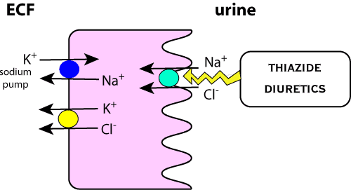

Diuretics acting in the early distal tubule

Sites of action.
Thiazides were the standard diuretics before frusemide
came along, and are still used occasionally, mainly because they are very cheap.
Older drugs such as chlorthiazide and hydrochlorthiazide
are most widely used in animals but newer drugs such as methcyclthiazide
and cyclothiazide are used in man.
They inhibit resorption by decreasing membrane permeability to Na+ and Cl- which
promotes a large increase in urine Na+ and Cl- concentration and mild to moderate
increases in urine volume. They also cause secretion of K+ and increase the
excretion of other ions ie. Ca++, Mg++, PO4 and iodine. Plasma renin and aldosterone
levels increase which also increases K+ excretion. All the thiazides produce
a similar level of diuresis. They have anti-hypertensive effects, mechanism
is unknown. They can be combined with other diuretics since they work in different
parts of the kidney. They are also weak carbonic anhydrase inhibitors but this
is not clinically important.
Paradoxically, thiazides reduce the urine output in patients with nephrogenic
or pituitary diabetes insipidus, possibly by over compensation of Na+ resorption
in the proximal tubule - this effect is achieved only with a low sodium diet.
nephrogenic diabetes insipidus
general diuretic for moderate diuresis
systemic hypertension
prevent recurrence of calcium oxalate uroliths in dogs
post-parturient udder oedema in dairy cattle
Renal failure or compromised renal function - they reduce renal blood flow
and glomerular filtration rate. In azotemic animals measure BUN and/or serum
creatinine levels before treating.
Overuse causes changes in electrolytes and/or fluid balance, particularly hypokalaemia
- remember digoxin.
back to diuretics
| 6 Cardiovascular index |
| |
copyright
Massey University
|